Final Project
Table of Contents
1 Introduction
The semester has come to an end. I learned a lot by taking CS194-26 a.k.a. Computational Photography at UC Berkeley. To finish this class and my stay in Berkeley, I got to pick 2 projects out of some pre-canned project Porf. Efros and the TA’s assembled. My decision was to implement both the Poor Man’s AR and the Seam Carving projects.
2 Poor Man’s AR
This project was somewhat similar to the Panorama stitching project in the sense that we need to rely on the computer to find certain edges and their correspondences on different images/frames. The goal is to take a video of a shoe box that has a drawn 3D grid on top of it, set the points manually for the first frame and let the computer do the rest. I enjoyed it even though the results are definitely not as good as regular Augmented Reality you can get on phones today (both efficiency-wise and visualization-wise). This is definitely a Poor Man’s AR.
2.1 Taking the Video
The first step to creating an Augmented Reality video is to make sure your object has a visible and well defined grid on top/on the side of it. I drew my points and grid on a shoe box I had lying around in my place. The final video looks like this:

You can see I made the points in the grid larger than I should. This is due to a number of problems I had trying to use other objects in which I drew less noticeable dots in the next section.
2.2 Capturing the Points
Now, we need to capture the points, i. e. make sure we have the points camera coordinates and world coordinates for each of the frames. To do that, we follow these steps:
2.2.1 Input Points
We input all the points camera coordinates for the first frame.
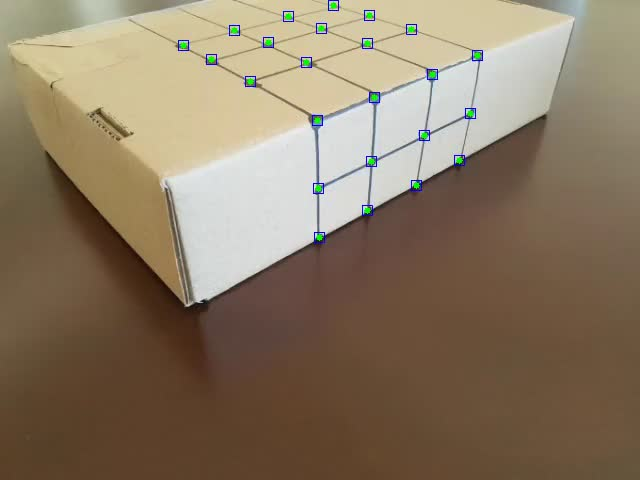
Once this is done, we are ready to track them over the next frames, but we don’t know where they are in the world space. Hence, the step that follows.
2.2.2 Input World Coordinates
Alongside the camera coordinates, we also need the world coordinates, i. e. the coordinates inside the box grid, as the following image shows:
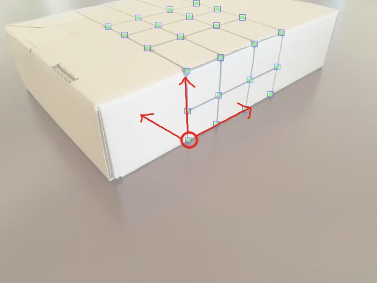
This will enable us to assign the same world coordinates throughout the frames, making the future projection stable.
2.2.3 Track points
This part was definitely the hardest part. Considering that I decided to use some tracking algorithms from OpenCV without having any prior knowledge in them, I had to program using it as a “Black Box” API. The class’s facilitators recommended the use of the MedianFlow Tracker, which has good characteristics to represent things that don’t really move in their own, but the camera moves around them. However fast this method was, it didn’t give me good results for any of the videos I recorded, either by missing a point after some time or just by representing the inaccurately. Therefore, I ended up choosing a more inefficient bu highly accurate method: the CSRT Tracker. This method better tracks non rectangular shapes (we are tracking small round points) and enlarges the selected tracking region. It uses HoG (Histogram of Gradient) and Colornames as its standard features [1].
By the end of the tracking phase, we had all the needed coordinates as this video shows:\

2.3 Calculating the Projection Matrix
Now, for us to render points from the world coordinate, we need a transformation matrix \(world_{4x1} \to camera_{3x1}\) (using homogeneous coordinates). We know that this transformation is of the highest degree, meaning it’s not an Affine matrix like the face morphing project but a Projection matrix with 8 degrees of freedom. The math follows as we want to solve \(Ax = b\) for A:
\(Ax = b \to (Ax)^{T} = b^{T} \to x^{T}A^{T} = b^{T}\)
Which leads us to solving this equation for the least squared points, since we have more than the expected amount of coordinates.
A = np.linalg.lstsq(x.T, b.T).T
We do this for every frame to map the world position to the perceived camera position.
2.4 Drawing a Cube!
Now that we have this, we can simply map every point of a cube from the world position to their rendered camera position for every frame. I redered a cube with vertex positions [[1,2,0], [1,2,1], [2,2,1], [2,2,0],
[1,3,0],[1,3,1],[2,3,1],[2,3,0]] and it turned out like this:

2.5 Final Thoughts
This was a fun activity I was able to do in one day. I want to try implement in the future a coordinate automatic perceiver with corner detection for the first frame in order to decrease user input. This makes me want to go deeper into AR because even though it was somewhat hard to do in a day, I feel like true AR has so many challenges that I haven’t even started to consider for this project.
3 Seam Carving
Seam Carving is a technique for resizing context aware windows. In other words, when you change the resolution of some application you have opened, you would rather it fit every object it had inside the window with the same scale but with different accommodations between the objects than it just scale everything down. One example of this technique is shown in webpages with a lot of text like Wikipedia, where the images accommodate the text between them regarding the window scale. The idea of this project is to apply this technique to images. All of it is based on this paper. Some other examples of Seam Carving and the execution of the algorithm the author’s of the paper made can be seen in this video.
In summary, this algorithm bases itself on energy functions which we can apply to an image. Once we have this applied, we find the minimal seam (trace of points between one edge and another) and remove it. We do that until we have the resolution we want. All of this will be explained in the next sections.
3.1 Energy Maps
Energy functions have the sole purpose of expressing a pixel’s importance to the image composition. This is a crucial part of the problem, since the seams importance depend solely o this. I’ve come up with 7 different energy functions, for which I map every pixel in the image. I normalize every energy map to the interval \([0, 1]\).
The examples will be based on this image:
3.1.1 Gradient
A simple Sobel gradient function that sums the absolute derivative of the axis: \(energy = |\frac{\partial(I)}{\partial x}| + |\frac{\partial(I)}{\partial y}|\). This was recommended by the paper.
3.1.2 Gaussian Gradient
The same as above but with a Gaussian kernel applied to it. The kernel size is inputted by the user, but usually I prefer the results when the size equals 3~5.
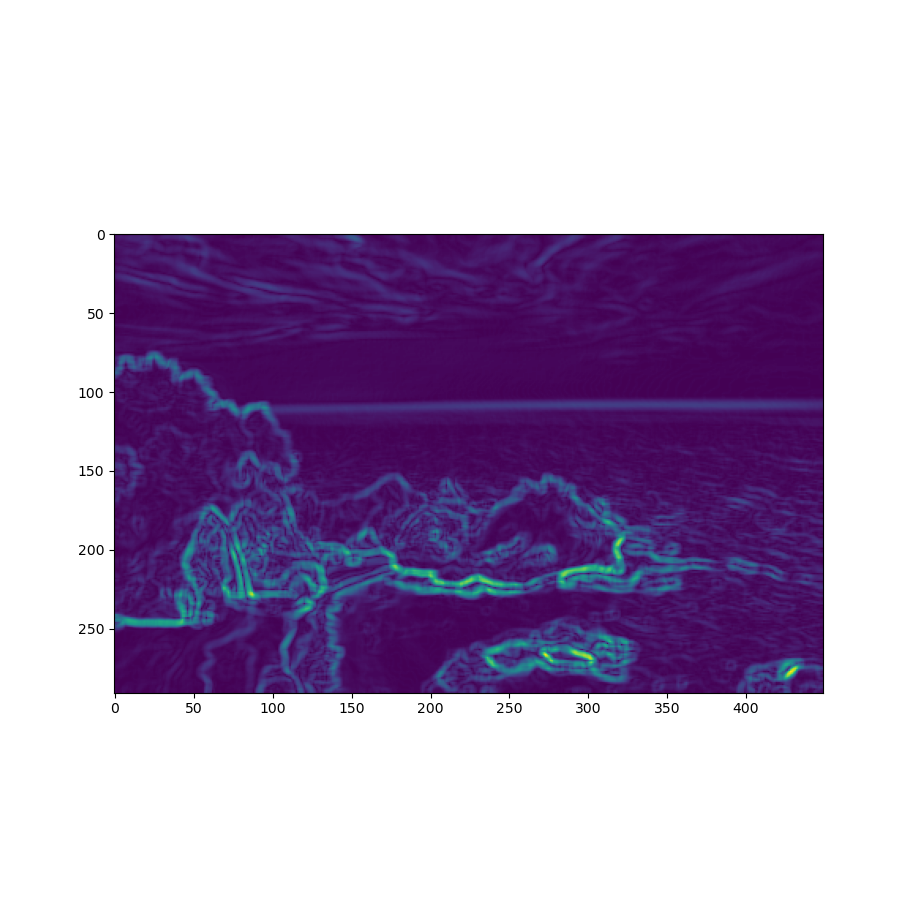
3.1.3 HoG (Histogram of Gradients)
This was also used in the paper and is defined by the following equation: \(energy = \frac{|\frac{\partial(I)}{\partial x}| + |\frac{\partial(I)}{\partial y}|}{HoG(I)}\), where \(HoG\) is the Histogram of Gradients.
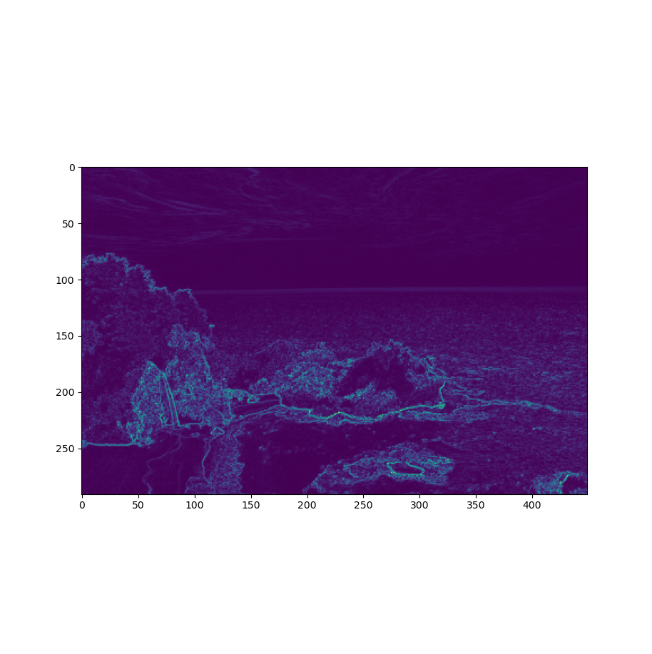
3.1.4 HoG + Gaussian Kernel
The name is pretty self-explanatory, but it’s the HoG function with a Gaussian kernel applied to it.
3.1.5 Scharr Kernel
Instead of a Sobel kernel, we use a Scharr kernel to compute gradients, it’s a more intense operation that produces more defined objects.
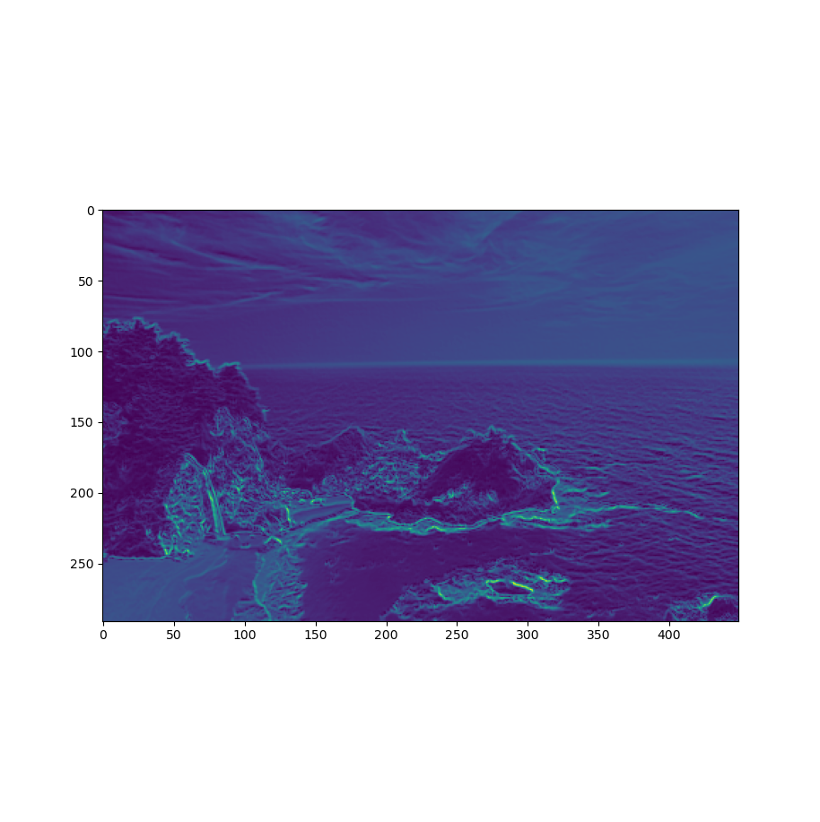
3.1.6 Scharr + Gaussian Kernel
Again: self-explanatory name. Scharr processed image with a Gaussian kernel applied to it.
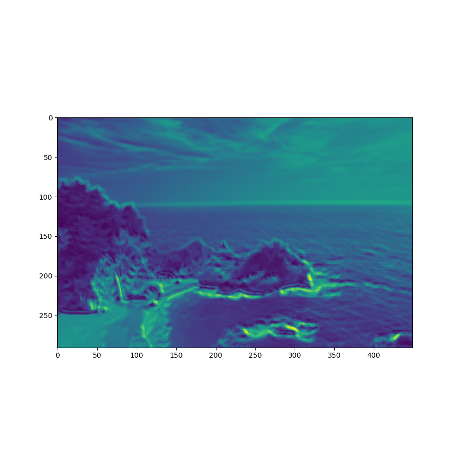
3.1.7 My Function
I decided to cook up a function of my own as we were encouraged to. I took one of the energy functions listed down as a Bells and Whistles problem for the Carnegie Mellon University students in their project spec for Seam Carving [3] and mixed them with the Gradient function. Their function took into consideration the first and the second degree gradient. The equation goes like this: \(energy = |\frac{\partial(I)}{\partial x}| + |\frac{\partial(I)}{\partial y}|, finalEnergy = energy + |\frac{\partial(energy)}{\partial x}| + |\frac{\partial(energy)}{\partial y}|\). I also apply a Gaussian filter to it.
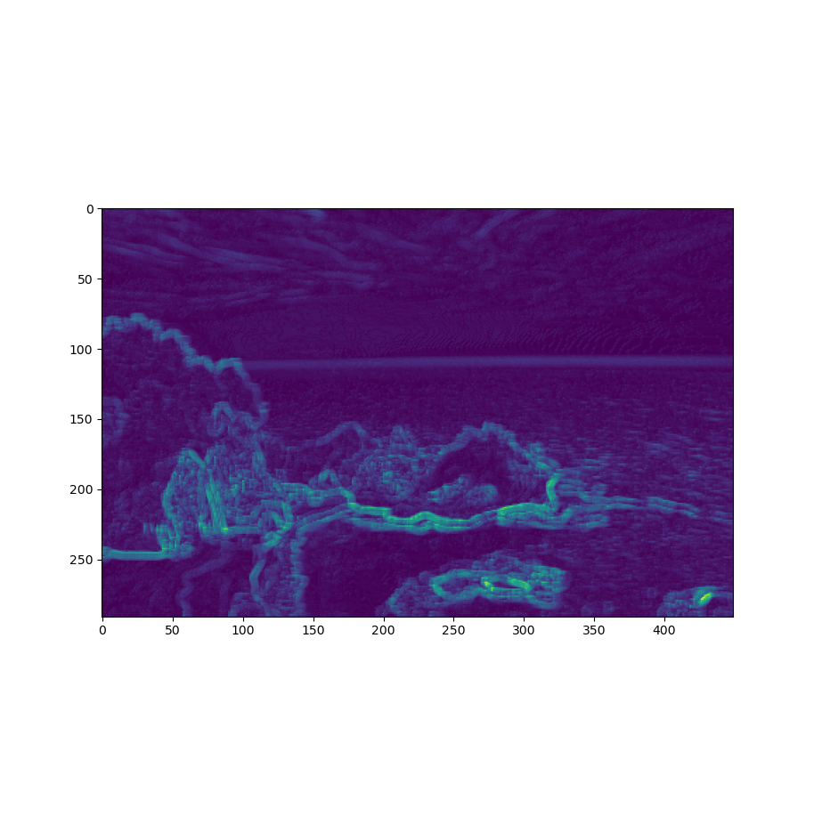
3.2 Calculating Seams
The seams are calculated by going through the image and summing up the minimal energy paths. If we want to remove a vertical seam (decrease width), we perform a row-wise execution, while if we want to remove a horizontal seam (decrease height), we perform it column-wise. For each pixel in the image, we sum their energy to the minimal seam value between the previous 3 points (previous row for vertical seams and previous column for horizontal seams). By the end of this process, we’ll have our seam map as an image such as this:
→ 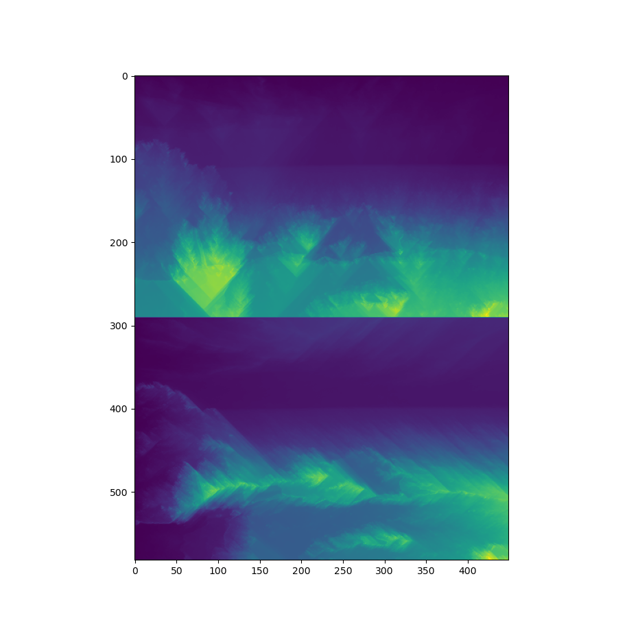
3.3 Removing Seams
By performing a backtrack search from the minimal seam map value in the last edge (lower edge if we want the vertical seam and right edge if we want the horizontal seam), we can find the minimal seam. E. g.:
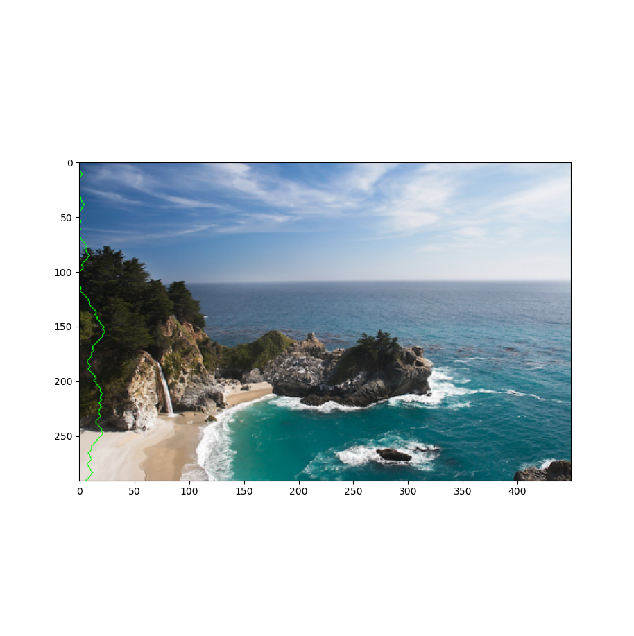 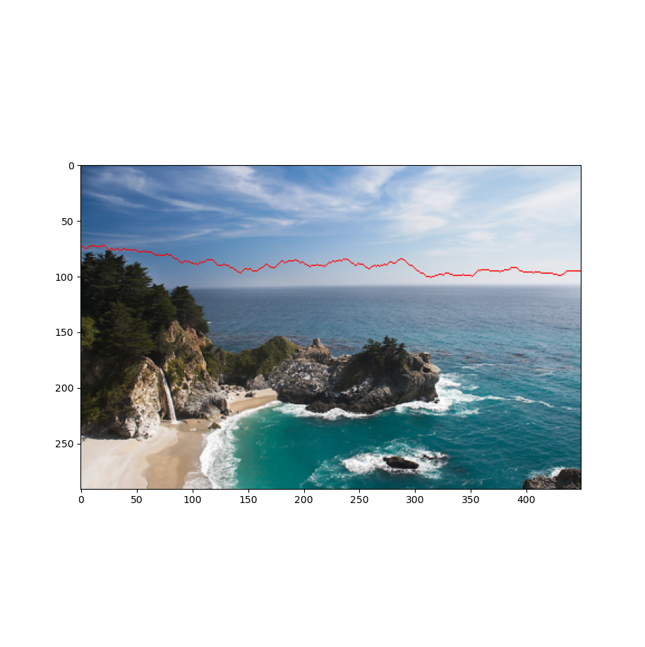
By performing this operation a number of times, we can find the best removable areas (I’m using the HoG energy function here):
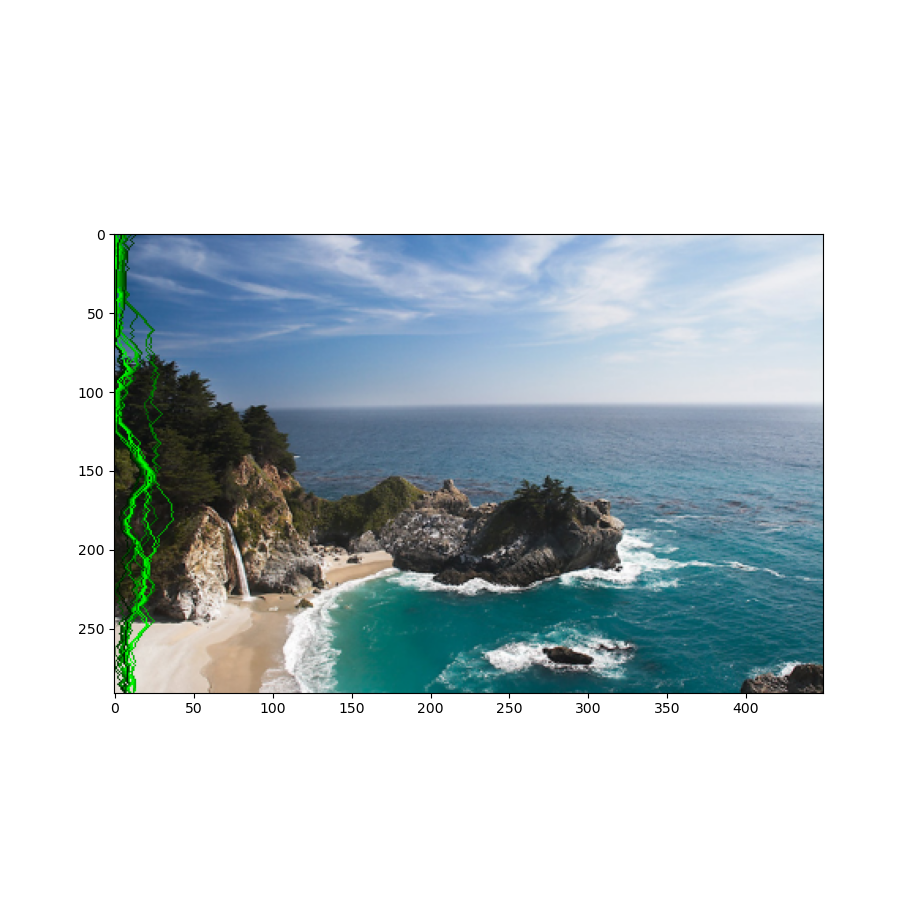 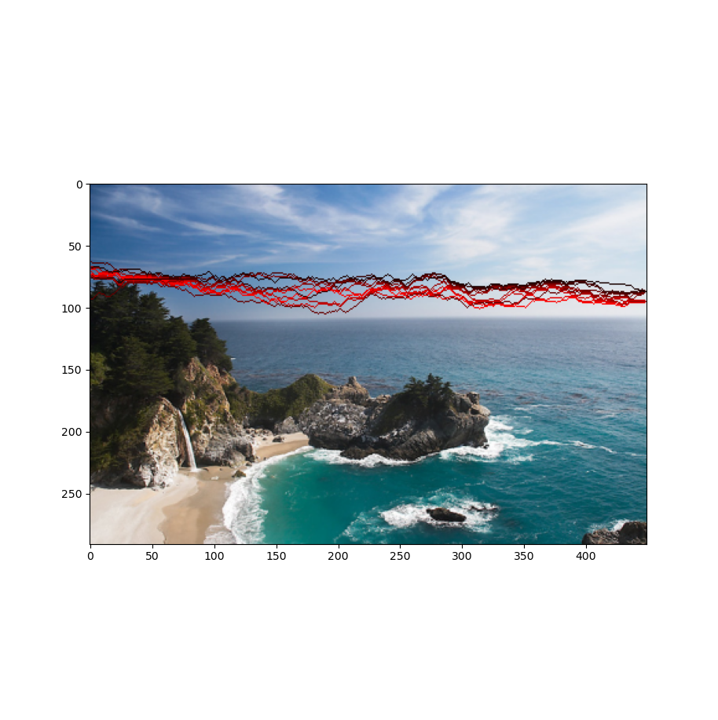
Finally, removing them, gives us the following treamed result:
→ 
Drastically carving the image results in this:
→ 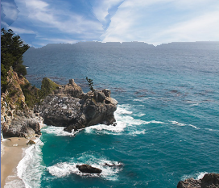
We can see that the result looks weird and a little bit rough around the edges. This is due to the fact that HoG is not very compatible with this image. We’ll talk about this in the “Optimizing Energy to Images” section.
3.4 Efficiently Removing Seams
One of my goals with this project was to create a cool UI for people to be able to downsize their images with seam carving. However, waiting for the seam map to be calculated every time you want to remove one seam takes a lot of processing power and renders the possibility of making a real-time interaction interface almost impossible. This is why I decided to separate what could be precomputed and what couldn’t. The energy map and the seam map could definitely be precomputed. The seams could be precomputed as well, but you could be removing one of the seams pixels when removing another one, making a hard to filter edge-case. Once I had those, all I needed was to find the minimum value at the end edge and backtrack every time I wanted to trim the seam of an image. However, this stucks with images of resolution less than 500x500 since my own backtracking algorithm could use a bit of an efficiency boost. But here we have a real-time interface interaction:

3.5 Optimizing Energy to Images
Another possibility of Bells and Whistles for this project was to project a heuristic that would find the best energy map for a given image. As I said before, not all images have a “best energy function” and this is even acknowledged on the paper I based myself on. Therefore, I designed the following heuristic: the better the energy function, the closer to the center of the image the position mean will be. As an example, we have the following images and their heuristic orderings:
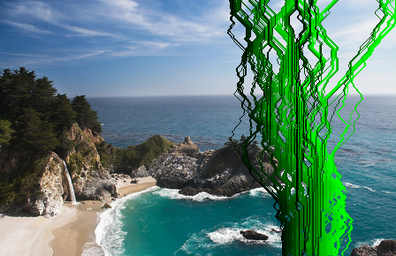 < 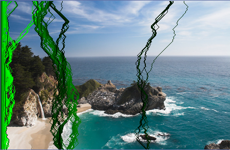
<
For these results, I used N = 100.
We can see how the 2nd best energy function tricks the heuristic by having a highly concentrated seam cluster but alternating the minimal seams between the cluster endpoints. The best ouput (right) is clearly the best trim. It maintains the right sea view and the regular cloud forms. I have also tried another heuristic which states that the best energy map is the one whose seam position mean is closer to the center, but then we could still have concentrated clusters.
3.6 User Interface
I created a user interface which enables you to see the energy map, seam map, trim the image in real time and plot whatever map you see. Once I had this interface, I was able to debug the program much more easily. Here is a demo:

3.7 Results
I got some really good results for landscape images. However, I had some problems when seams got really concentrated. I will show both in two separate sections (I used my heuristic in all the results + gauss kernel of size 5 when the returned heuristic used it). The heuristic didn’t seem to like my energy function, so I added its result as well (in my opinion they were the best).
3.7.1 Good Results
Format: first = original, second = heuristic energy resized, third (bottom) = my energy function resized
3.7.2 Bad Results & Pragmatic Mitigation
These bad results are due to the fact that my seams were highly concentrated on them. My proposed mitigation will be applied in the 3rd image (bottom). The mitigation is to spread the minimal seam’s value to a given rate to the 2 adjacent seams. This way, it will decrease the chances of removing everything from the concentration area. This gives out some good results but it also changes the seams, sometimes bending the image to extremes. I used a spread rate of 0.2 in the following results.
- Cabin
Picked energy: My energy
 → 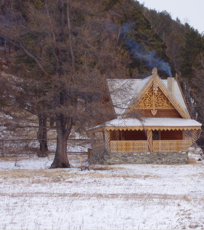
→ 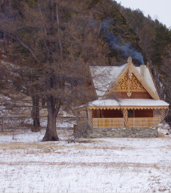
→ 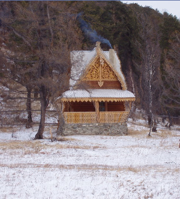
We see it removed the right tree completely when it shouldn’t! In the one in which I use my spread algorithm, the tree stays, but the picture is sort of inconsistent.
- Couch
Picked energy: My energy
 → 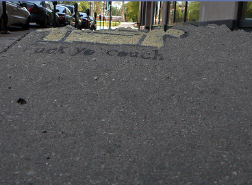
→ 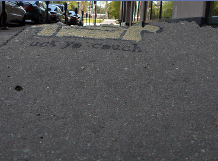
→ 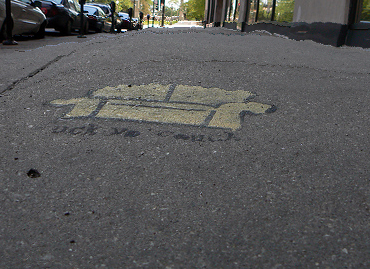
We can see how the regular result just ignores the couch completely while the spread algorithm result takes it into consideration! (It’s still bendy and inconsistent though).
- Sunset Arch
Picked energy: Scharr + Gauss
→
→
Now this one only has bad results. The horizontal seams, even with the spread algorithm concentrates on trimming the lake while it should trim above the arch!
- Shirtless Guy
Picked energy: My energy
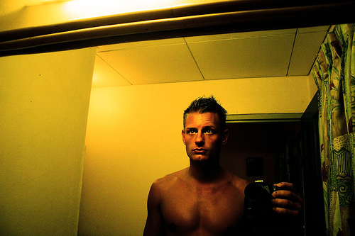 → 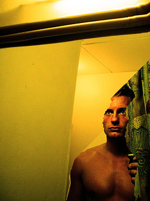
→ 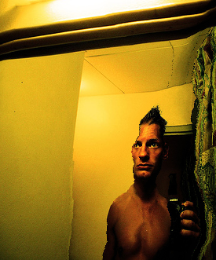
Again: only has bad results. Using faces is definitely hard with this! (The spread one looks funny).
3.8 Final Thoughts
Honestly, implementing this was both really fun and painful. Whenever I thought my algorithm was wrong, I tried another energy function and it worked nice. It’s really hard to debug when you don’t know if the problem is in your code or on the picture compatibility with your energy function. I liked the results and learned a lot though. I still want to make this more efficient and with less for loops as Prof. Efros hates them.